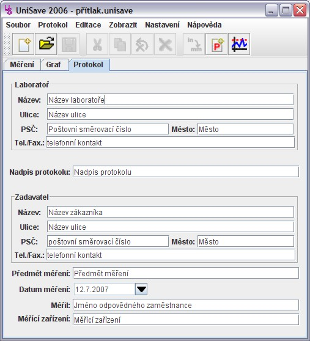

Zde lze nastavit hodnoty, které jsou použity pro vytvoření protokolu o měření. Tyto hodnoty jsou uloženy do souboru společně s naměřenými hodnotami. V případě vytvoření nového protokolu jsou použity naposledy použité hodnoty s výjimkou data měření, které je nastaveno na aktuální datum.

Údaje o laboratoři nebo pracovišti, které provádí měření. Tyto údaje jsou použity v záhlaví protokolu.
Nadpis protokolu o měření.
Údaje o zadavateli (zákazníkovi), pro kterého je měření prováděno.
Název nebo popis předmětu (výrobku), na kterém se měření provádí.
Datum, kdy bylo měření provedeno.
Jméno zodpovědného pracovníka, který provedl měření.
Název a popis měřidla (identifikační číslo měřidla), kterým bylo měření provedeno.